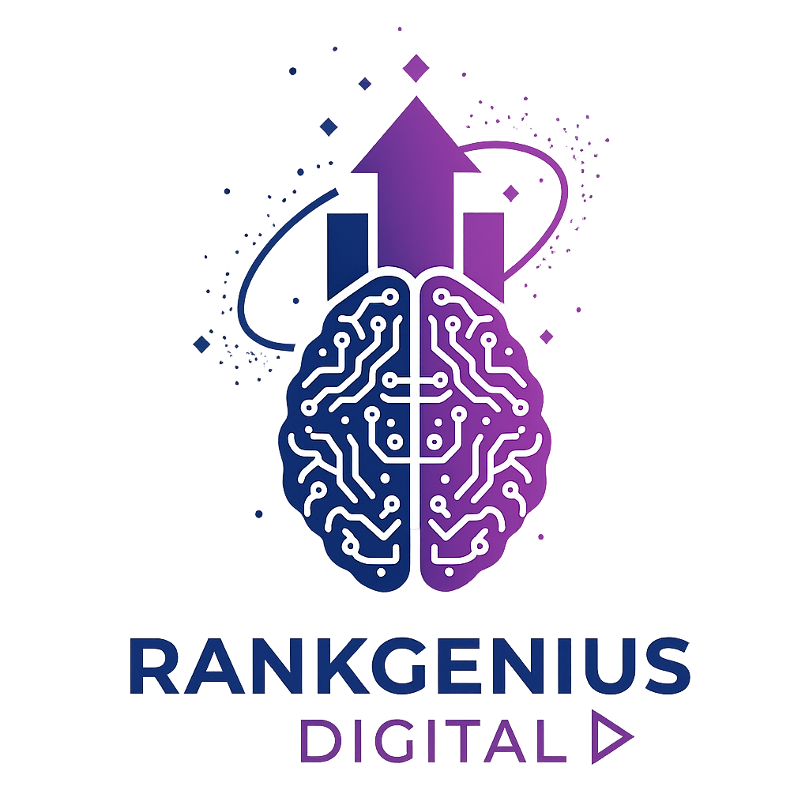
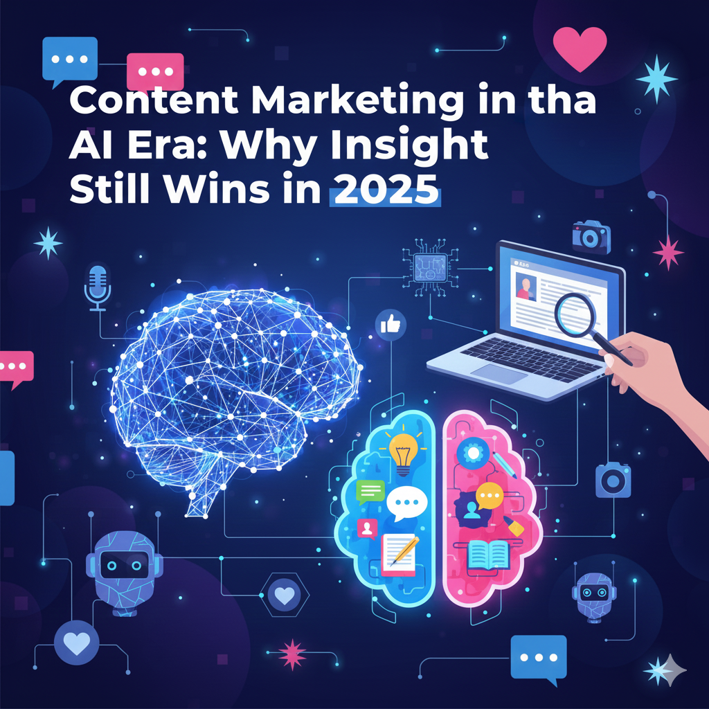

The digital world in 2025 is louder, faster, and more competitive than ever. Businesses that combine AI with human expertise use AI-assisted content optimization to scale content while maintaining quality and uniqueness.AI tools can write articles, generate social posts, create scripts, summarize information, and produce content at a speed no human can match. With this acceleration comes a new challenge: the internet is overflowing with content — but not with value.
But success does not come from automation alone — it comes from strategy. That’s why brands invest in SEO content strategy to ensure every piece of content aligns with search intent and audience needs.
Amid this explosion of AI-generated noise, one principle remains unchanged:
Content is still king — but only the right content.
People no longer trust generic information. They trust expertise, experience, and human perspective. Businesses that rely solely on AI content blend into the noise, while brands that combine AI efficiency with human insight stand out, gain authority, and grow.
Content marketing today is not just about publishing; it's about building trust, delivering clarity, and showing real value — something AI alone cannot do. This blog explains how content marketing works in the AI era, why human-first content wins, and how businesses can build powerful content strategies in 2025 and beyond.
In a world where everyone can publish instantly, the quality of ideas matters more than the quantity of posts. Content remains the foundation of SEO and branding. High-quality content is created through content writing services that focus on storytelling, expertise, and real value.king because it is:
People don’t remember ads —
they remember stories, lessons, emotions, and expertise.
While AI helps create content faster, it cannot replicate lived experience, emotional intelligence, industry insights, cultural relevance, or strategic thinking. These human elements make content memorable and trustworthy.
AI increases volume.
Human insight increases value.
Content marketing is the strategic creation and distribution of information that educates, engages, convinces, and influences an audience — without directly selling. It is a long-term approach that builds credibility and nurtures relationships.
Content marketing is not just publishing — it’s strategic communication. A strong digital marketing service integrates content across SEO, social media, and branding channels.
Content marketing includes:
The goal is not to publish endlessly.
The goal is to publish meaningfully.
Modern content marketing is about:
When done right, content becomes a 24/7 digital salesperson that educates prospects even when your business is offline.
Different formats serve different goals. These formats are often created and managed through content writing services combined with strategic distribution. the winning formula is multiformat content.
⭐ Blogs & Long-Form Guides
Perfect for SEO, authority-building, and in-depth explanations.
⭐ Videos & YouTube Tutorials
Best for trust, engagement, and step-by-step learning.
⭐ Reels, Shorts & TikTok-Style Content
High visibility, rapid reach, and strong emotional impact.
⭐ Ebooks, PDFs, Checklists
Ideal for lead generation and thought leadership.
⭐ Podcasts & Audio Content
Strong for storytelling, expert interviews, and long-form insights.
⭐ Case Studies & Testimonials
Essential for social proof and conversion.
⭐ Emails & Newsletters
Perfect for nurturing audience over time.
Businesses that combine multiple content forms dominate their niche because they meet customers wherever they are.
AI content is fast, structured, and helpful — but limited by data.
Human content is insightful, emotional, and original — powered by experience.
AI helps scale production, but human insight drives value. This balance is achieved through
AI-assisted content optimization.
AI Content Is Good For:
AI Content Struggles With:
Human Content Excels At:
In 2025, the best-performing content is AI-assisted but human-crafted.
AI is the engine.
Human insight is the driver.
Now that we understand what content is and why it matters, here is the complete execution system — from storytelling to repurposing.
People don’t connect with facts — they connect with emotion.
Storytelling builds emotional connection — something no AI can replicate. High-quality storytelling comes from expert-driven content writing services.
Storytelling involves:
Stories increase:
Your story is your competitive advantage.
The strongest content solves real user problems. People search for solutions — not information.
Solving real user problems requires deep understanding of search behavior, which is part of a strong SEO content strategy.
Pain-point content focuses on:
Examples:
Solve problems → Build trust → Drive sales.
Authority is built through consistent publishing and expert insights — often structured under a SEO content strategy.
People choose the brand they trust — not the cheapest.
Human-first content stands out in AI-heavy environments and is best delivered through professional content writing services.
Human content stands out in a world filled with AI-generated noise.
Trust signals and expertise are strengthened when content is strategically optimized using AI-assisted content optimization.
Google evaluates content based on:
Strong content should include:
Trust-driven content wins rankings.
Matching intent requires planning — a core part of SEO content strategy.
Intent-first content = modern SEO success.
Multimedia content enhances engagement and is often executed within a broader digital marketing service.
Modern content should include:
Multimedia increases engagement and improves rankings.
One piece of content can become many:
Blog → Reel → Carousel → YouTube → LinkedIn → Email → Tweet thread
Repurpose once → multiply reach.
Repurposing content across platforms is a key strategy used in digital marketing services.
AI should support, not replace. Smart brands use AI-assisted content optimization for efficiency while keeping human insight at the core.
Use AI for:
Do NOT use AI for:
AI = speed | Human = depth
Businesses that combine content + SEO + distribution through digital marketing services see long-term growth.
Content is an asset — not an expense.
A winning strategy starts with clear planning. Many businesses begin with a SEO content strategy to define topics, formats, and goals.
Choose 3–5 core topics for your brand.
AI provides information. Humans provide meaning.
The future of content belongs to businesses that combine human creativity with AI efficiency. Brands that invest in content writing services, structured SEO content strategy, and scalable AI-assisted content optimization will dominate in 2025.
AI has changed content creation forever. It made content faster, easier, and more accessible — but it also filled the internet with repetition. In this environment, real expertise, unique perspective, and emotional storytelling stand out more than ever.
The businesses that win in 2025 are those that use AI strategically while keeping human creativity at the core. AI helps scale content, but it cannot replace human depth. Content marketing will continue to evolve, but the brands that will dominate are those that combine technology + insight + authenticity.
Content is still king —
but human-driven content is the kingdom.